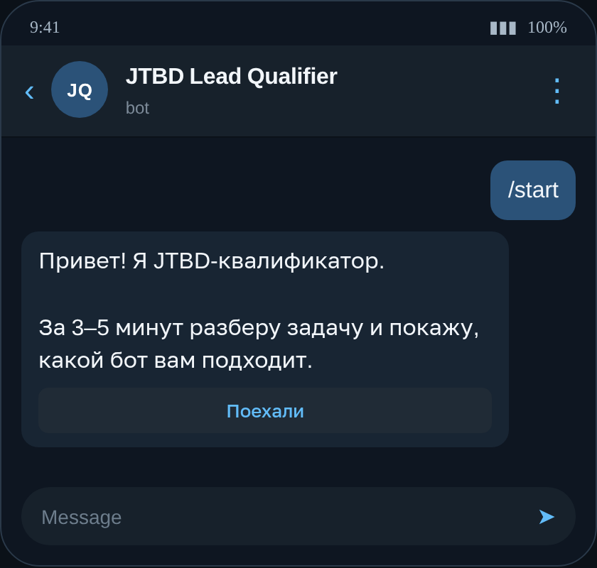
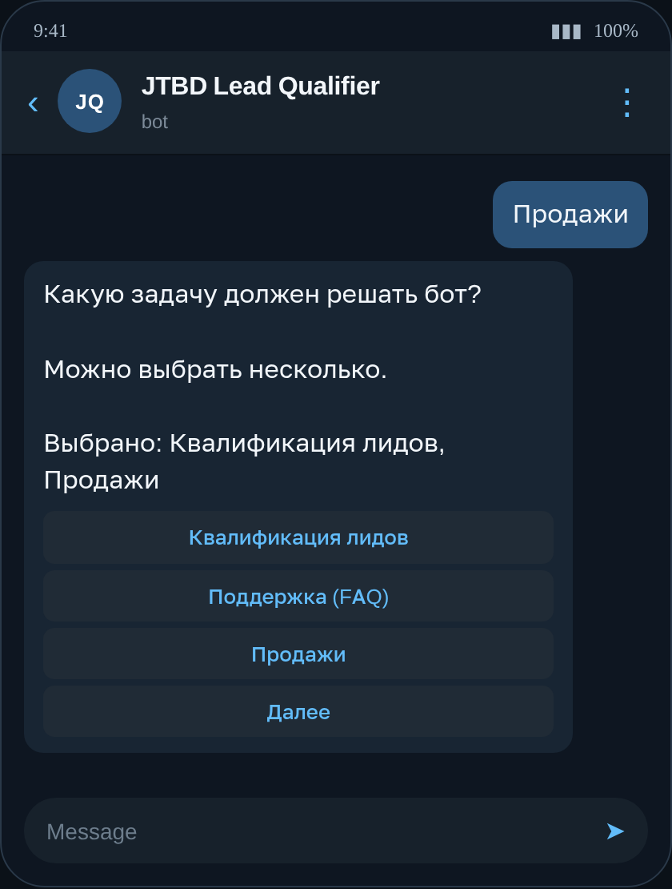
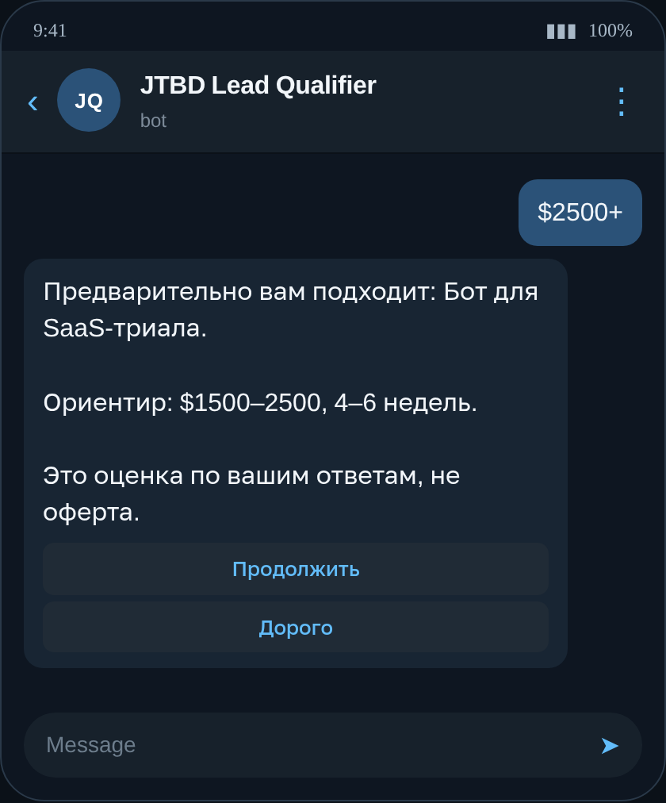
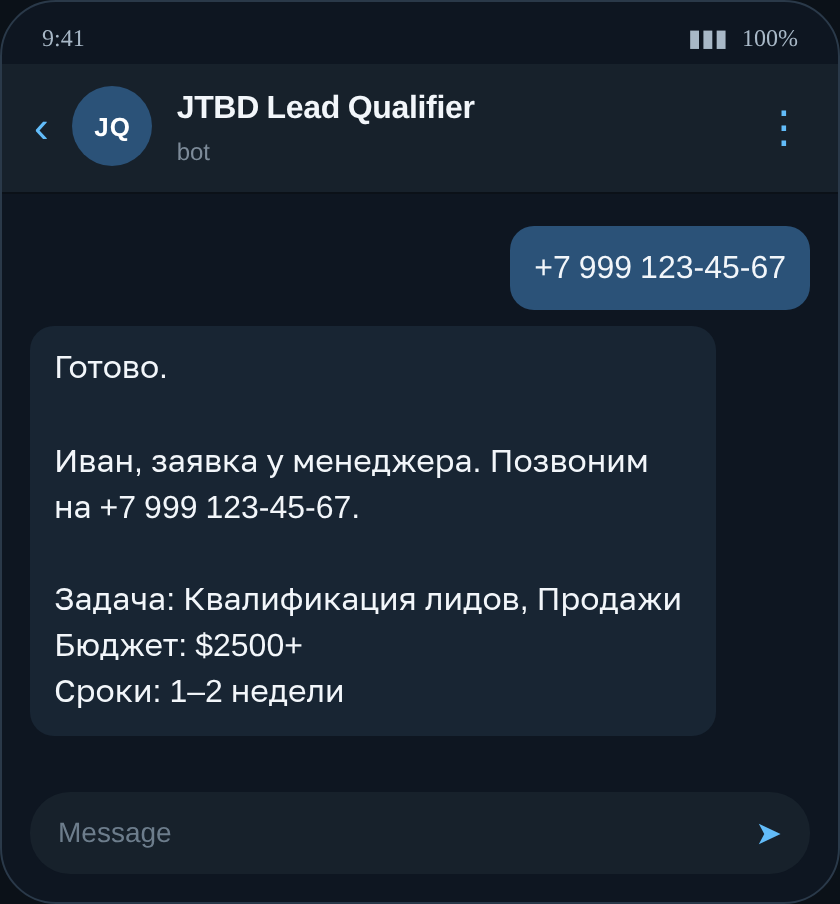
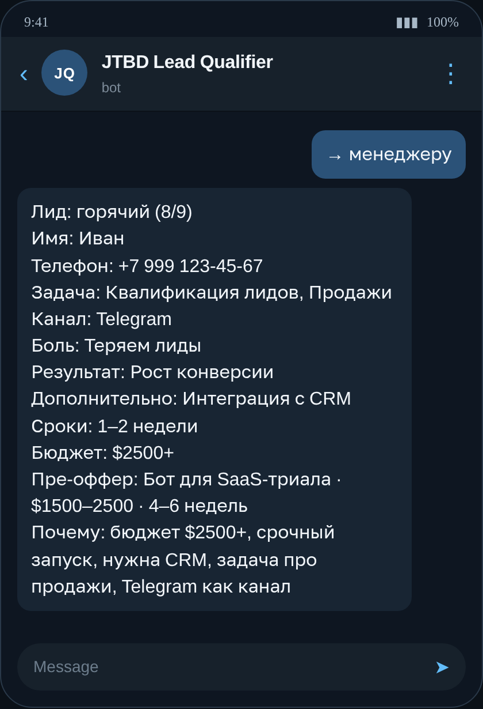

Диалог
bun run demo / jtbd-lead-qualifierlong polling · JTBD
system
$ bun run demo
bot
Привет! Я JTBD-квалификатор. За 3–5 минут разберу задачу и покажу, какой бот вам подходит.
user
Поехали
bot
Как к вам обращаться? Напишите имя одним сообщением.
user
Иван
bot
Какую задачу должен решать бот? Можно выбрать несколько. Выбрано: Квалификация лидов, Продажи
system
→ канал → боль → результат → CRM → сроки → бюджет
bot
Предварительно вам подходит: Бот для SaaS-триала. Ориентир: $1500–2500, 4–6 недель. Это оценка по вашим ответам, не оферта.
user
Продолжить
system
→ примеры → звонок → телефон
system
→ карточка лида: горячий, 8/9
Экраны





Что умеет
- 15 состояний: имя, задача, канал, боль, результат, CRM, сроки, бюджет.
- Мультивыбор задачи, канала и дополнительных требований.
- Условный пре-оффер: с CRM — SaaS-триал, без CRM — вебинарная воронка.
- Скоринг 0–9 и температура лида с объяснением каждого балла.
- Карточка лида уходит менеджеру в Telegram.
- Long polling, callback-кнопки и текст как событие.
- Ветка nurturing для «дорого» и «пока не надо».
- 7 тестов, включая полный сценарий и доставку карточки.
- Собран на PersonaForge: сценарий — данные, runtime — движок.
Как устроено
src/botFSM, экраны и форма — 15 состояний
src/scoringбаллы, температура, карточка лида
src/telegrampolling, callback-кнопки, доставка
persona-forgeдвижок: инварианты, переходы, форма
src/demo.tsконсольный прогон всего сценария
file tree9 строк
src/
├── bot/
│ └── definition.ts
├── scoring/
│ └── lead-score.ts
├── telegram/
│ └── adapter.ts
├── demo.ts
└── index.tsЧто реально, а что mock
Ниже — фактическое состояние проекта. Всё, что помечено как mock или отсутствует, не выдаётся за готовую функцию.
| Пункт | Состояние |
|---|---|
| Хранилище | ограничение in-memory, диалоги теряются |
| CRM | нет нет, карточка в один Telegram-чат |
| Календарь | нет нет, звонок — это сбор телефона |
| Скоринг | ограничение эвристика 0–9, не ML |
| LLM | нет нет, тексты шаблонные |
| Аналитика | нет нет воронки и конверсии |
| Телефон | ограничение текстом, без request_contact |
Как читать таблицу. «Не готово» — реализации нет в репозитории. «Ограничение» — функция есть, но работает в узких рамках. Это проверяется по README и коду.
Запуск
.env
BOT_TOKEN=123456:AA...
MANAGER_CHAT_ID=123456789terminal
bun install
cp .env.example .env
bun run startЧто дальше
- Postgres/Redis для диалогов и лидов.
- CRM-интеграция и статусы лидов.
- request_contact и нормализация телефона.
- Календарь для реального бронирования звонка.
- Аналитика воронки: старт → пре-оффер → звонок.
- A/B-тесты текстов и пре-оффера.